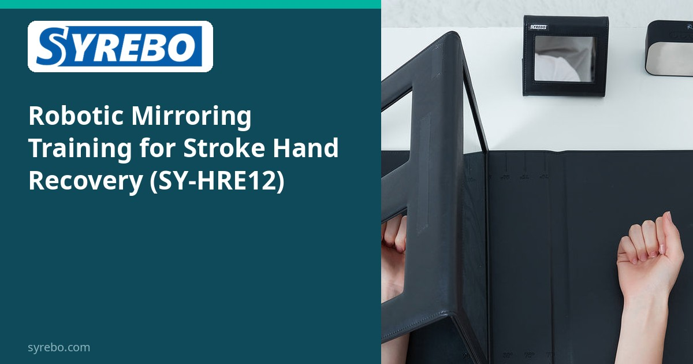
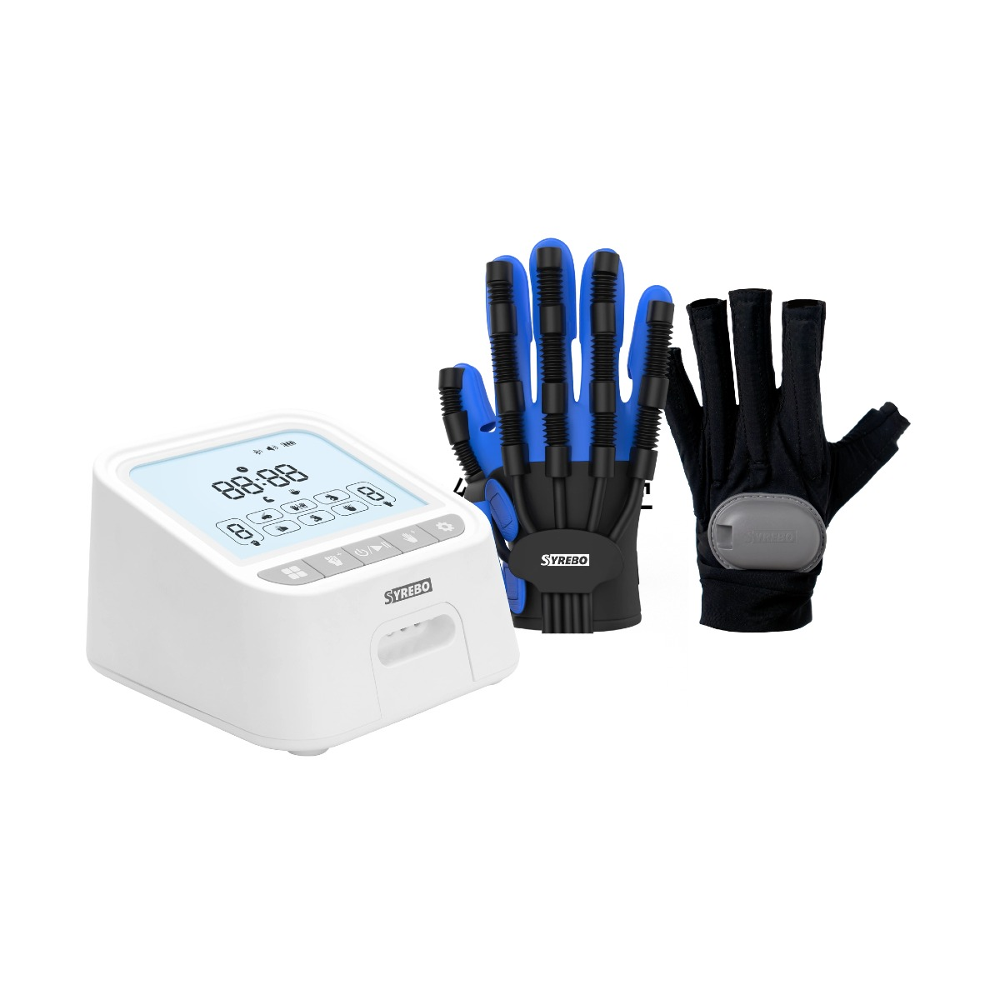

Клиническая исследовательская колонка Syrebo
Обзоры исследований роботизированной реабилитации кисти, основанные на доказательствах
Из статьи
Effects of Robotic Mirroring Training and Mirror Therapy with Robot on Unilateral Neglect, Depression, and Activities of Daily Living Among Patients with Subacute Stroke
Woo JJ, Kwon JS
NeuroRehabilitation, 2025
DOI: 10.1177/10538135251382902 · PMID: 41092018


У части людей в подострой фазе после инсульта не только слабая кисть. Они могут игнорировать одну сторону пространства; при этом может ухудшаться настроение. Рандомизированное исследование 2025 года в NeuroRehabilitation сравнило два способа использовать одну и ту же мягкую перчатку: функцию зеркала и заданный пассивный режим. Статья сообщает о преимуществе зеркальной тренировки по исходам, связанным с игнорированием и депрессией. Выборка — 24 человека.
Одностороннее игнорирование может влиять на внимание к одной стороне пространства и на участие человека в повседневных делах. В этом исследовании сравнивали зеркальную функцию перчатки с заранее заданными пассивными движениями.
По аннотации обе группы использовали SY-HRE12: одна — зеркальную функцию, другая — заранее заданные пассивные движения. Сравнивались два способа использования одной перчатки.
В аннотации устройство исследования указано как Syrebo SY-HRE12. На фотографии показана система для реабилитации кисти с блоком управления и перчатками; соответствие изображения устройству исследования не подтверждено.
Дизайн исследования
Рандомизированное сравнение. Обе группы использовали SY-HRE12. Одна группа использовала функцию зеркала. Другая — заданное пассивное движение. Исходы включали одностороннее игнорирование, меры, связанные с депрессией, и повседневные действия.
Выборка и режим
Двадцать четыре человека в подострой фазе, по 12 в группе. Занятия длились 30 минут, три раза в неделю, пять недель.
Основные результаты
В этой выборке статья сообщает о преимуществе роботизированной зеркальной тренировки над заданным пассивным движением по исходам, связанным с игнорированием и депрессией. Это разница двух режимов одного устройства. Это не значит, что перчатка лечит игнорирование или депрессию. Аннотация описывает использование той же перчатки с заранее заданными пассивными движениями в контрольной группе.
Вопрос сдвигается от «нужно ли пользоваться перчаткой» к «какой режим той же перчатки». Для людей, у которых есть ещё игнорирование и груз настроения, это более точный клинический вопрос.
Двадцать четыре участника держат только осторожное чтение. В доступном реферате не указано, проходили ли занятия дома и проводились ли они под наблюдением. Исследование не предлагает гарантированного изменения внимания или настроения.
Границы Малая выборка (12 в группе). Аннотация описывает контрольный режим как заранее заданные пассивные движения с той же перчаткой. Различия приведены по статье. Полный текст пока недоступен; детали протокола требуют проверки по полной статье.